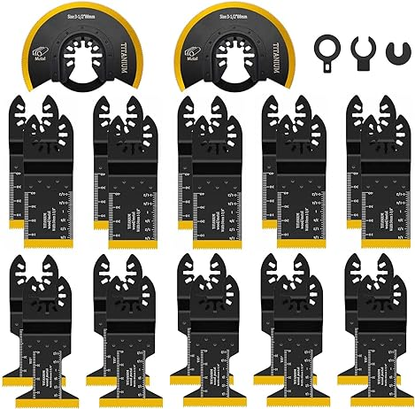

Piokrtye 22Pcs Titanium Oscillating Saw Blades, Professional Universal Multitool Blades for Metal Wood Nails Screws fit Dewalt Rockwell Milwaukee Makita Bosch
$42.99
Only 9 left in stock - order soon.
Get it by Wednesday, October 11.
- 【Titanium Nitride Coated】The sawteeth are made of M42 high speed steel and plated with titanium, which increases the hardness of the blade itself by more than 50%, and performs better in actual work.
- 【Superior Value Kit】Package includes 3 different types Titanium oscillating multitool blades: 10Pcs 1-3/8", 10Pcs 1-3/4", and 2Pcs 3-1/2". Various types of multitool blades meet your various cutting needs.
- 【Precision Cutting】Built-in length markers on two sides, use metric and imperial units ensure you can get accurate cuts easy and fast while you working with it.
- 【Universal Compatible System】The interface system and 3 extra adapters make our oscillating tool blades fit for the most of oscillating tools on the market like Fein Multimaster,Milwaukee,Craftsman,Dewalt etc. *NOTE: it's not recommended to use this set for the tools of the starlock and starlock plus interface system, and MM30, MM40, MM50
- 【Application Scenario】Titanium plated saw blades can be used for building branches, house decoration, door frame floor cutting, metal cutting (Aluminum, Nails, Mild Steel), and plastic cutting to meet your various cutting needs. NOT recommended to cut Hard steel like Steel Nails, Steel Bolts.
Sold by RailEasePro and Fulfilled by Amazon
Visit the RailEasePro storefront
